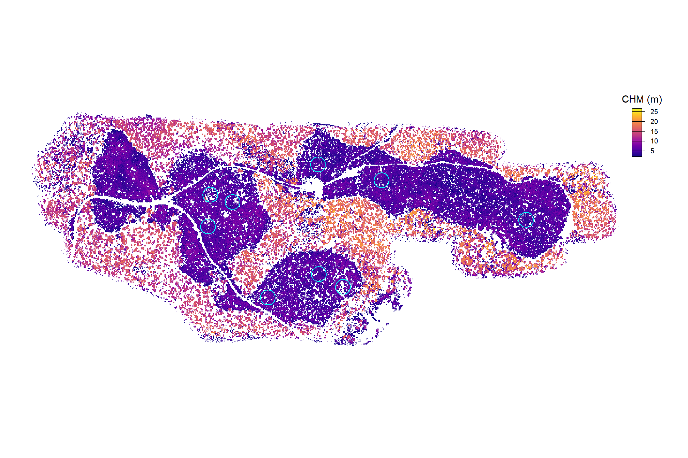
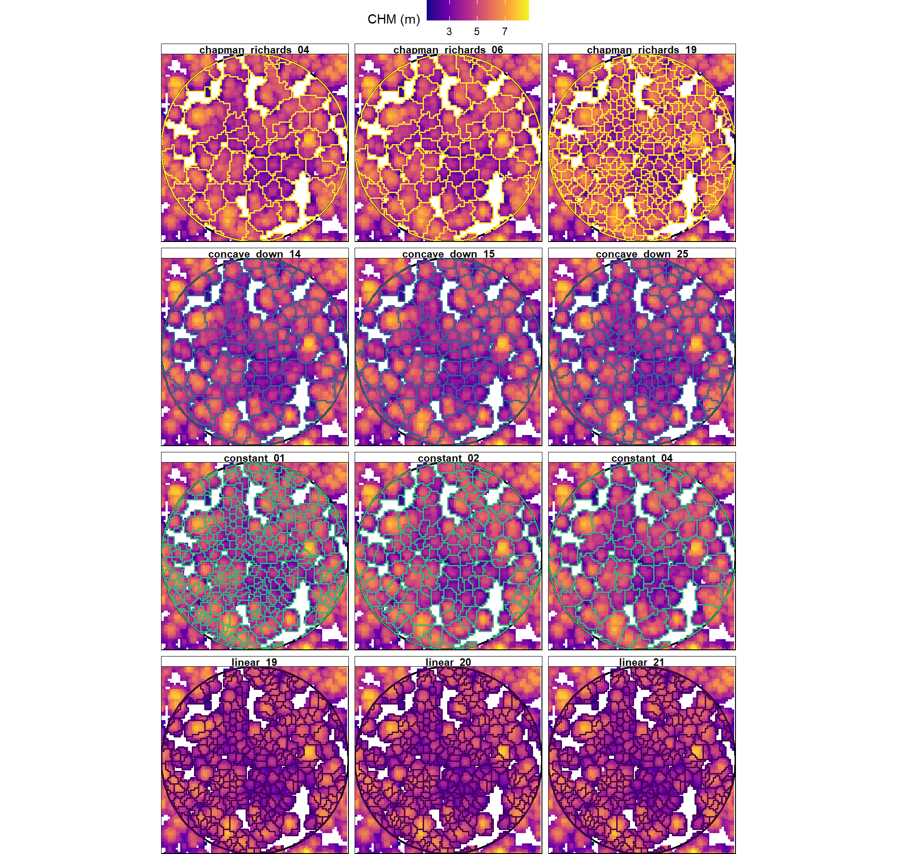
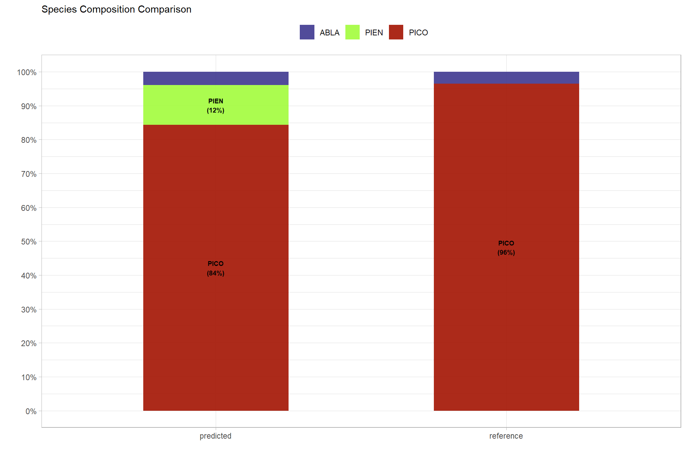
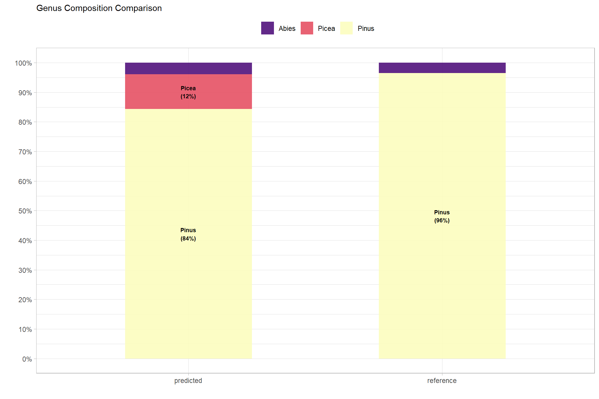

8 Colorado State Forest (Colorado)
Now that we have reviewed the process and evaluation method and set up functions to standardize and streamline our data processing, let’s do it for another site: Colorado State Forest Service’s (CSFS) State Forest State Park
8.1 Field Data
Field data from this study site is from:
Colorado State Forest Service’s monitoring program led by Ethan Bucholz installed snow water equivalent (SWE) sampling plots on the State Forest State Park at a lodgepole pine (Pinus contorta) treatment site. Two treatment applications included thinning with residual waste material subjected to either lop-and-scatter (LNS) or Pile-and-Burn (PLB) with nearby untreatend control sites also established. Across treatment and control sites, 1/10th acre monitoring plots were established with trees of at least 5 inch DBH measured for diameter, height, species, and crown status.
Important Detail Note that this is the first data set we have reviewed that does not include tree location data, we only have information on trees within plots. As such, we will only be able to evaluate the proportional compositions of each species predicted by the model against the reference proportions within the measured plot area (i.e. using Bray-Curtis dissimilarity/similarity index ).
let’s load in the plot data first
csfs_swe_plots <-
sf::st_read(
"../data/csfs_swe/CSFS_Monitoring_Plots_SWE_2025/SWE_Plots.shp"
, quiet = T
) %>%
dplyr::rename_with(
~ tolower(.x) %>%
stringr::str_squish() %>%
make.names() %>%
stringr::str_replace_all( "\\.{2,}", ".") %>%
stringr::str_remove( "\\.$") %>%
stringr::str_replace_all( "\\.", "_")
) %>%
dplyr::mutate(
plot_id =
stand_id %>%
stringr::str_squish() %>%
stringr::str_c("_", stringr::str_squish(plot_id))
, plot_area_ac = 1/10
# 1 ha = 2.47105 acres
, plot_area_ha = plot_area_ac/2.47105
, plot_area_m2 = plot_area_ha*10000
, plot_radius_meters = sqrt(plot_area_m2 / pi)
) %>%
sf::st_buffer(.$plot_radius_meters) %>%
dplyr::select(
plot_id, plot_area_m2, plot_radius_meters
)
# huh?
# csfs_swe_plots %>% dplyr::count(projection)
# csfs_swe_plots %>% dplyr::glimpse()
# csfs_swe_plots %>% sf::st_drop_geometry() %>% dplyr::count(mu,plot) %>% dplyr::filter(n>1)
# csfs_swe_plots %>% sf::st_drop_geometry() %>% dplyr::count(plot_id) %>% dplyr::filter(n>1)load in the trees
this_min_dbh_cm <- 5/0.394 # measured trees >= 5 in
# read locations first
csfs_swe_trees <-
readr::read_csv(
"../data/csfs_swe/CSFS_Monitoring_Plots_SWE_2025/Monitoring_SWE_Trees.csv"
, progress = F
, show_col_types = F
) %>%
dplyr::rename_with(
~ tolower(.x) %>%
stringr::str_squish() %>%
make.names() %>%
stringr::str_replace_all( "\\.{2,}", ".") %>%
stringr::str_remove( "\\.$") %>%
stringr::str_replace_all( "\\.", "_")
) %>%
# convert units
dplyr::mutate(
plot_id = tolower(full_id) %>%
stringr::str_remove("^swe_") %>%
stringr::str_remove("_posttreatment$") %>%
toupper() %>%
stringr::str_squish() %>%
dplyr::na_if("")
, dbh_cm = dbh/0.394
, tree_height_m = tree_length/3.281
) %>%
# filter
dplyr::filter(
!is.na(dbh_cm)
& dbh_cm >= this_min_dbh_cm # measured trees >= 5 in
& !is.na(species)
) %>%
# keep only trees with a matching plot
dplyr::inner_join(
csfs_swe_plots %>%
sf::st_drop_geometry() %>%
dplyr::select(plot_id)
, by = "plot_id"
) %>%
dplyr::mutate(
treeID = dplyr::row_number() %>% as.character()
) %>%
dplyr::select(plot_id,treeID,dbh_cm,tree_height_m,species)this data includes numeric species codes. perhaps they match with the standard USFS numeric species codes?
#### now we need to get the species data........
# dplyr::glimpse(csfs_swe_trees)
# fia_species_lookup %>% dplyr::glimpse()
# csfs_swe_trees %>%
# dplyr::distinct(spcd=species) %>%
# dplyr::inner_join(fia_species_lookup) %>%
# dplyr::glimpse()
# # nice, they are
csfs_swe_trees <-
csfs_swe_trees %>%
dplyr::rename(spcd=species) %>%
dplyr::inner_join(
fia_species_lookup %>%
dplyr::select(spcd,species_symbol)
, by = "spcd"
)let’s check those field plots out to orient ourselves to the location
csfs_swe_plots %>%
sf::st_centroid() %>%
mapview::mapview(
zcol = "plot_id"
, layer.name="CSFS SWE: field plots"
, popup=F
)# csfs_swe_trees %>%
# sf::st_union() %>%
# sf::st_bbox() %>%
# sf::st_as_sfc() %>%
# sf::st_centroid() %>%
# sf::st_transform(crs=4326) %>%
# sf::st_coordinates()
# # # 44.85681,-68.62513what is the distribution of species?
csfs_swe_trees %>%
dplyr::count(species_symbol) %>%
dplyr::arrange(desc(n)) %>%
dplyr::mutate(pct=scales::percent(n/sum(n), accuracy=0.1))## # A tibble: 2 × 3
## species_symbol n pct
## <chr> <int> <chr>
## 1 PICO 55 96.5%
## 2 ABLA 2 3.5%## # A tibble: 6 × 2
## plot_id n
## <chr> <int>
## 1 CTRL_001 17
## 2 CTRL_002 16
## 3 LNS_003 7
## 4 PLB_001 1
## 5 PLB_002 12
## 6 PLB_003 48.2 Point Cloud Data
data was collected over the study site via a UAS-lidar flight at an altitude of 122 m (400 ft) and speed of 8.9 meters per second (20 miles per hour)
let’s check out the raw point cloud data
csfs_swe_las_f_temp <- "../data/csfs_swe/las/"
csfs_swe_las_ctg_temp <- lidR::readLAScatalog(csfs_swe_las_f_temp)
csfs_swe_las_ctg_temp## class : LAScatalog (v1.2 format 3)
## extent : 415777.1, 416689.6, 4494074, 4494443 (xmin, xmax, ymin, ymax)
## coord. ref. : WGS 84 / UTM zone 13N
## area : 336325.3 m²
## points : 326.44 million points
## type : terrestrial
## density : 970.6 points/m²
## density : 750 pulses/m²
## num. files : 1let’s check out the lidar data coverage compared to the field plot data
# csfs_swe_las_ctg_temp@data %>%
# sf::st_set_geometry("geometry") %>%
# dplyr::mutate(f = basename(filename)) %>%
# ggplot() + geom_sf(alpha=0.5) + geom_sf_label(aes(label = f),size=2)
csfs_swe_las_ctg_temp@data$geometry %>%
sf::st_union() %>%
sf::st_as_sf() %>%
dplyr::mutate(data = "UAS-lidar data extent") %>%
mapview::mapview(
zcol = "data"
, layer.name="CSFS SWE: UAS-lidar data"
, popup=F
) +
mapview::mapview(
csfs_swe_plots %>% sf::st_centroid()
, zcol = "plot_id"
, layer.name="CSFS SWE: field plots"
, popup=F
)use cloud2trees to process the raw point cloud data to generate a CHM for use in tree detection
################################################
# input/output data str
################################################
# outdir
c2t_output_dir_temp <- project_data_df %>%
dplyr::filter(tolower(data_site_nm)=="csfs_swe") %>%
dplyr::pull(data_dir)
c2t_process_dir_temp <- file.path(c2t_output_dir_temp, "point_cloud_processing_delivery")
# timer file
c2t_tracking_fnm_temp <- file.path(c2t_process_dir_temp, "processed_tracking_data.csv")
# save to tracking df
project_data_df <- project_data_df %>%
dplyr::mutate(
c2t_process_dir = ifelse(data_dir==c2t_output_dir_temp, c2t_process_dir_temp, c2t_process_dir)
, c2t_tracking_fnm = ifelse(data_dir==c2t_output_dir_temp, c2t_tracking_fnm_temp, c2t_tracking_fnm)
)
# project_data_df %>% print(n=nrow(project_data_df))
# get point cloud density and raster resolutions
get_ptcld_density_chm_res_temp <- get_ptcld_density_chm_res_fn(csfs_swe_las_ctg_temp)
# get_ptcld_density_chm_res_temp
# fnm
chm_fnm_temp <- file.path(c2t_process_dir_temp, paste0("chm_",get_ptcld_density_chm_res_temp$chm_res_m,"m.tif") )
dtm_fnm_temp <- file.path(c2t_process_dir_temp, paste0("dtm_",get_ptcld_density_chm_res_temp$dtm_res_m,"m.tif") )
# save to tracking df
project_data_df <- project_data_df %>%
dplyr::mutate(
las_pts_m2 = ifelse(data_dir==c2t_output_dir_temp, get_ptcld_density_chm_res_temp$pts_m2, las_pts_m2) # las_pts_m2
, chm_res_m = ifelse(data_dir==c2t_output_dir_temp, get_ptcld_density_chm_res_temp$chm_res_m, chm_res_m) # chm_res_m
, chm_fnm = ifelse(data_dir==c2t_output_dir_temp, chm_fnm_temp, chm_fnm) # chm_fnm
, dtm_res_m = ifelse(data_dir==c2t_output_dir_temp, get_ptcld_density_chm_res_temp$dtm_res_m, dtm_res_m) # dtm_res_m
, dtm_fnm = ifelse(data_dir==c2t_output_dir_temp, dtm_fnm_temp, dtm_fnm) # dtm_fnm
)
# project_data_df %>% dplyr::filter(data_dir==c2t_output_dir_temp) %>% dplyr::glimpse()
##############################################################
# cloud2trees::cloud2raster
##############################################################
if(
!file.exists(chm_fnm_temp)
|| !file.exists(dtm_fnm_temp)
){
# time it
st_temp <- Sys.time()
# run it
# cloud2trees
cloud2raster_ans <- cloud2trees::cloud2raster(
output_dir = c2t_output_dir_temp
, input_las_dir = csfs_swe_las_f_temp
, accuracy_level = 2
, keep_intrmdt = F
, dtm_res_m = get_ptcld_density_chm_res_temp$dtm_res_m # (1/sqrt(pts_m2_temp))*2
, chm_res_m = get_ptcld_density_chm_res_temp$chm_res_m # 1/sqrt(pts_m2_temp)
, min_height = 0 # effectively generates a DSM based on non-ground points
)
# timer
mins_temp <- difftime(Sys.time(),st_temp,units = "mins") %>% as.numeric()
# save tracking
dplyr::tibble(
timer_cloud2raster_mins = mins_temp
) %>%
write.csv(
file = c2t_tracking_fnm_temp
, row.names = F, append = F
)
}else{
dtm_temp <- terra::rast( dtm_fnm_temp )
chm_temp <- terra::rast( chm_fnm_temp )
cloud2raster_ans <- list(
"dtm_rast" = dtm_temp
, "chm_rast" = chm_temp
)
}we’ll set the minimum CHM resolution to 0.25 m to match the cloud2trees default. if the automatically-determined CHM resolution based on the point cloud density used in the cloud2trees::cloud2raster() was lower than this level, we’ll aggregate the raster using terra::aggregate() and terra::resample() to get the exact target resolution. if the determined CHM resolution was higher than this level due to low point density, we will use the CHM as-is since this is already the finest resolution possible with the point cloud density.
let’s aggregate the CHM for this site and put it into a list of CHM rasters that we can map over in all of the processing
agg_chm_rast_temp <- agg_chm_rast_fn(
chm = cloud2raster_ans$chm_rast
, res = min_chm_res
, dir =
project_data_df %>%
dplyr::filter(tolower(data_site_nm)=="csfs_swe") %>%
dplyr::pull(c2t_process_dir)
)
# agg_chm_rast_temp
# agg_chm_rast_temp %>% terra::clamp(lower = 1.37, values = F) %>% terra::plot()
# add to the chm list
chm_list[[this_data_site_nm]] <- agg_chm_rast_temp
# chm_listlet’s check out the CHM
# plot to check out the fine-resolution CHM raster
chm_list[[this_data_site_nm]] %>%
terra::plot(
col = viridis::plasma(n=100)
, axes=F
, plg = list(
title = "CHM (m)"
, cex = 0.8
, title.cex = 0.9
, shrink = 0.6
)
)
what if we filter the CHM to height values >= 2 m and add the plot boundaries?
# plot to check out the fine-resolution CHM raster
chm_list[[this_data_site_nm]] %>%
terra::clamp(lower=2,values=F) %>%
# terra::summary()
terra::plot(
col = viridis::plasma(n=100)
, axes=F
, plg = list(
title = "CHM (m)"
, cex = 0.8
, title.cex = 0.9
, shrink = 0.6
)
)
ref_plots_list[[this_data_site_nm]] %>%
sf::st_transform(terra::crs(chm_list[[this_data_site_nm]])) %>%
terra::vect() %>%
terra::plot(add=T, col = NA, border = "cyan")
and convert the reference trees and plot data to the point cloud data projection
ref_plots_list[[this_data_site_nm]] <- ref_plots_list[[this_data_site_nm]] %>% sf::st_transform(terra::crs(chm_list[[this_data_site_nm]]))
ref_trees_list[[this_data_site_nm]] <- ref_trees_list[[this_data_site_nm]] ############this isn't even spatial
# ref_plots_list$CSFS_SWE
# ref_trees_list$CSFS_SWE8.3 Tree Detection
cloud2trees implements a CHM-based individual tree detection method accessible via cloud2trees::raster2trees(). this method requires a window function used to set the search radius used to find local maxima in the CHM. These local maxima represent individual tree top points and are subsequently used to delineate individual tree crowns via a marker-controlled watershed segmentation
because the objective of this study is to evaluate a species/genera classification method, we just want the best ITD results we can get based on the field reference data. We are not interested in evaluating tree segmentation here, that has already been done across varied input data and forest types.
use our function to clip the CHM to the plot plus a buffer and run cloud2trees::raster2trees() for each window function. the return should be a spatial tree list unique by function.
get the individual tree predictions for each window function for the area within the field reference plots with a buffer
c2t_process_dir_temp <-
project_data_df %>%
dplyr::filter(tolower(data_site_nm)=="csfs_swe") %>%
dplyr::pull(c2t_process_dir)
fnm_temp <- file.path(c2t_process_dir_temp,"ws_pred_trees.gpkg")
project_data_df <- project_data_df %>%
dplyr::mutate(
ws_pred_trees_fnm = ifelse(c2t_process_dir==c2t_process_dir_temp, fnm_temp, ws_pred_trees_fnm)
)
if(!file.exists(fnm_temp)){
csfs_swe_ws_pred_trees <-
1:nrow(ref_plots_list[[this_data_site_nm]]) %>%
purrr::map(
\(rn)
ws_testtest_fn(
chm = chm_list[[this_data_site_nm]]
, buffer = 6 # since we only have one plot we're just going to go for it
, plot_sf =
ref_plots_list[[this_data_site_nm]] %>%
dplyr::ungroup() %>%
dplyr::slice(rn) %>%
sf::st_union()
# a named list of functions ex: cloud2trees::itd_ws_functions()
, ws_fn_list = get_ws_fn_list_ans # cloud2trees::itd_ws_functions() #
)
) %>%
purrr::list_rbind(names_to = "plot_dta_idx")
# add plot id
csfs_swe_ws_pred_trees <-
csfs_swe_ws_pred_trees %>%
dplyr::left_join(
ref_plots_list[[this_data_site_nm]] %>%
dplyr::mutate(plot_dta_idx=dplyr::row_number()) %>%
sf::st_drop_geometry() %>%
dplyr::select(plot_dta_idx,plot_id)
, by = "plot_dta_idx"
) %>%
sf::st_set_geometry("geometry")
# csfs_swe_ws_pred_trees %>% sf::st_crs()
# csfs_swe_ws_pred_trees %>% dplyr::glimpse()
# csfs_swe_ws_pred_trees %>% sf::st_drop_geometry() %>% dplyr::count(ws_fn_nm)
# get dbh
csfs_swe_ws_pred_trees_dbh_temp <-
csfs_swe_ws_pred_trees %>%
dplyr::rename(xxxtreeID=treeID) %>%
dplyr::mutate(
treeID = dplyr::row_number() %>% as.character()
) %>%
cloud2trees::trees_dbh()
# csfs_swe_ws_pred_trees_dbh_temp %>% dplyr::glimpse()
# add to trees
csfs_swe_ws_pred_trees <-
csfs_swe_ws_pred_trees %>%
dplyr::mutate(
join_id = dplyr::row_number() %>% as.character()
) %>%
dplyr::left_join(
csfs_swe_ws_pred_trees_dbh_temp %>%
sf::st_drop_geometry() %>%
dplyr::mutate(
join_id = as.character(treeID)
) %>%
dplyr::select(
join_id, tidyselect::starts_with("fia_est_dbh"), dbh_cm
)
, by = "join_id"
)
# csfs_swe_ws_pred_trees %>% dplyr::glimpse()
# # plot real quick
# csfs_swe_ws_pred_trees %>%
# sf::st_drop_geometry() %>%
# dplyr::slice_sample(n = 9999) %>%
# ggplot2::ggplot(mapping = ggplot2::aes(x=tree_height_m,y=dbh_cm)) +
# ggplot2::geom_point() +
# ggplot2::geom_point(mapping = ggplot2::aes(y=fia_est_dbh_cm_lower),color="gray") +
# ggplot2::geom_point(mapping = ggplot2::aes(y=fia_est_dbh_cm_upper),color="gray")
# save
sf::st_write(csfs_swe_ws_pred_trees, dsn = fnm_temp, quiet = T, append = F)
}else{
csfs_swe_ws_pred_trees <- sf::st_read(fnm_temp, quiet = T)
}
csfs_swe_ws_pred_trees <- csfs_swe_ws_pred_trees %>%
dplyr::mutate(
ws_type =
ws_fn_nm %>%
# removes all numeric digits
stringr::str_remove_all("[0-9]+") %>%
stringr::str_replace_all("_"," ") %>%
stringr::str_squish() %>%
as.factor() %>%
forcats::fct_inorder(ordered = T)
, treeID = as.character(treeID)
)
# csfs_swe_ws_pred_trees %>% dplyr::glimpse()
# csfs_swe_ws_pred_trees %>% sf::st_drop_geometry() %>% dplyr::count(ws_type)let’s check out one example field plot and a few different window function tree detection and crown delineation results
# plot
p_temp <- ref_plots_list[[this_data_site_nm]] %>% dplyr::slice(1)
if(as.numeric(sf::st_area(p_temp))>2000){
p_temp <- p_temp %>%
sf::st_centroid() %>%
sf::st_buffer(sqrt(2000)/2) %>%
sf::st_bbox() %>%
sf::st_as_sfc() %>%
sf::st_as_sf() %>%
dplyr::mutate(plot_id = p_temp$plot_id[1])
}
# some trees
t_temp <-
csfs_swe_ws_pred_trees %>%
dplyr::filter(plot_id==p_temp$plot_id[1]) %>%
sf::st_intersection(p_temp) %>%
dplyr::inner_join(
csfs_swe_ws_pred_trees %>%
sf::st_drop_geometry() %>%
dplyr::distinct(ws_fn_nm,ws_type) %>%
dplyr::slice_sample(n = 3, by = ws_type) %>%
dplyr::select(ws_fn_nm)
, by = "ws_fn_nm"
)
chm_temp <- chm_list[[this_data_site_nm]] %>%
terra::crop(
t_temp %>%
sf::st_union() %>%
sf::st_bbox() %>%
sf::st_as_sfc() %>%
terra::vect()
, mask = T
)
# terra::plot(chm_temp)
plt_temp <-
chm_temp %>%
terra::clamp(lower = 1.37, values = F) %>%
terra::as.data.frame(xy=T) %>%
dplyr::rename(f=3) %>%
ggplot2::ggplot() +
ggplot2::geom_tile(
mapping = ggplot2::aes(x=x,y=y,fill=f)
, color = NA
, lwd = 0
) +
ggplot2::scale_fill_viridis_c(option = "plasma", na.value = "transparent", name = "CHM (m)") +
ggplot2::scale_x_continuous(expand = c(0, 0)) +
ggplot2::scale_y_continuous(expand = c(0, 0)) +
ggplot2::theme_void() +
ggplot2::theme(legend.position = "top")
plt_temp +
ggplot2::geom_sf(
data = p_temp %>% sf::st_transform(terra::crs(chm_temp))
, fill = NA
, color = "black"
, lwd = 0.8
) +
ggplot2::geom_sf(
data = t_temp
, mapping = ggplot2::aes(color = ws_type)
, fill = NA
, lwd = 0.7
) +
ggplot2::scale_color_viridis_d() +
ggplot2::facet_wrap(facets = dplyr::vars(ws_fn_nm), ncol = 3) +
ggplot2::theme(
strip.text = ggplot2::element_text(face = "bold")
, strip.background = ggplot2::element_rect(color = "black")
, panel.border = ggplot2::element_rect(color = "black", fill = NA, linewidth = 0.5)
) +
ggplot2::guides(
color = "none"
)
since we don’t have reference tree location data, we are going to pick the best window function to use for tree detection based on tree density (i.e. TPH) at the plot level against the reference plot values. we’ll calculate mean absolute percent error for TPH over the plot-level data for selecting the best window function for ITD.
since we need to align the predicted trees with the reference trees, we need to filter the predicted trees based on the modeled DBH to match with the field sampling protocol. this introduces an additional reliance on the DBH model in combination with the ITD process. For example, if the DBH estimation method generally underpredicts DBH, then we will filter out trees that potentially should not be filtered out.
# # function using plot spatial, predicted trees, and reference trees
# # ws_iter_instance_match_fn <- function(
ws_plot_level_fn <- function(
ref_plots
, ref_pts # needs plot_id
, pred_polys # needs plot_id
# minimum tree height
, min_ht_m = NA
# -OR- minimum DBH
, min_dbh_cm = NA
, tph_mape_only = F
){
if(
!any( stringr::str_equal(names(ref_plots),"plot_id") )
){
stop("`ref_plots` needs column named `plot_id`")
}
if(
!any( stringr::str_equal(names(ref_pts),"plot_id") )
){
stop("`ref_pts` needs column named `plot_id`")
}
if(
!any( stringr::str_equal(names(pred_polys),"plot_id") )
){
stop("`pred_polys` needs column named `plot_id`")
}
# filter based on field survey limit
if(
!is.na(as.numeric(min_dbh_cm))
){
# do they exist? .... PRED
if(
any( stringr::str_equal(names(pred_polys),"dbh_cm") )
# && any( stringr::str_equal(names(pred_polys),"fia_est_dbh_cm_lower") )
# && any( stringr::str_equal(names(pred_polys),"fia_est_dbh_cm_upper") )
){
pred_polys <- pred_polys %>%
dplyr::filter(
# dplyr::coalesce(fia_est_dbh_cm_lower,0) <= as.numeric(min_dbh_cm)
# , dplyr::coalesce(fia_est_dbh_cm_upper,0) >= as.numeric(min_dbh_cm)
dplyr::coalesce(dbh_cm,0) >= as.numeric(min_dbh_cm)
) %>%
dplyr::mutate(xxx_comp=dbh_cm)
}else{
# stop("`pred_polys` needs column named `dbh_cm`, `fia_est_dbh_cm_lower`, `fia_est_dbh_cm_upper`")
stop("`pred_polys` needs column named `dbh_cm`")
}
# do they exist? .... REF
if(
any( stringr::str_equal(names(ref_pts),"dbh_cm") )
){
ref_pts <- ref_pts %>%
dplyr::filter(
dplyr::coalesce(dbh_cm,0) >= as.numeric(min_dbh_cm)
) %>%
dplyr::mutate(xxx_comp=dbh_cm)
}else{
stop("`ref_pts` needs column named `dbh_cm`")
}
}else if(
!is.na(as.numeric(min_ht_m))
){
# do they exist? .... PRED
if(
any( stringr::str_equal(names(pred_polys),"tree_height_m") )
){
pred_polys <- pred_polys %>%
dplyr::filter(
dplyr::coalesce(tree_height_m,0) >= as.numeric(min_ht_m)
) %>%
dplyr::mutate(xxx_comp=tree_height_m)
}else{
stop("`pred_polys` needs column named `tree_height_m`")
}
# do they exist? .... REF
if(
any( stringr::str_equal(names(ref_pts),"tree_height_m") )
){
ref_pts <- ref_pts %>%
dplyr::filter(
dplyr::coalesce(tree_height_m,0) >= as.numeric(min_ht_m)
) %>%
dplyr::mutate(xxx_comp=tree_height_m)
}else{
stop("`ref_pts` needs column named `tree_height_m`")
}
}
if(nrow(ref_pts)==0){return(NULL)}
# pred polys to points
if(
!any( stringr::str_equal(names(pred_polys),"ws_fn_nm") )
){
stop("`pred_polys` needs column named `ws_fn_nm` ... see ws_testtest_fn() ")
}
if(
!any( stringr::str_equal(names(pred_polys),"tree_x") )
){
stop("`pred_polys` needs column named `tree_x` ... see ws_testtest_fn() ")
}
if(
!any( stringr::str_equal(names(pred_polys),"tree_y") )
){
stop("`pred_polys` needs column named `tree_y` ... see ws_testtest_fn() ")
}else{
pred_points <-
pred_polys %>%
sf::st_drop_geometry() %>%
sf::st_as_sf(coords = c("tree_x", "tree_y"), crs = sf::st_crs(pred_polys), remove = F)
}
# pred_points %>% dplyr::glimpse()
##### keep only pred trees within plot boundary
if(
!all( sf::st_geometry_type(ref_plots) == "POLYGON" )
){
stop("`ref_plots` must be POLYGON")
}
# intersect
i_pred <-
pred_points %>%
sf::st_intersection(
ref_plots %>%
sf::st_transform(sf::st_crs(pred_polys)) %>%
dplyr::select(hey_sp_plot_id=plot_id)
) %>%
# ensure we keep only trees intended
dplyr::filter(
plot_id==hey_sp_plot_id
)
# i_pred %>% dplyr::glimpse()
# # row unique by: plot_id,ws_fn_nm,treeID
# i_pred %>%
# sf::st_drop_geometry() %>%
# dplyr::group_by(plot_id,ws_fn_nm,treeID) %>%
# dplyr::count() %>%
# dplyr::filter(n>1)
pct_diff_df <-
tidyr::crossing(
ref_pts %>% sf::st_drop_geometry() %>% dplyr::distinct(plot_id)
, pred_polys %>% sf::st_drop_geometry() %>% dplyr::distinct(ws_fn_nm)
) %>%
# sum predictions
dplyr::left_join(
i_pred %>%
sf::st_drop_geometry() %>%
dplyr::group_by(plot_id,ws_fn_nm) %>%
dplyr::summarise(
pred_n = dplyr::n()
, pred_xxx_comp = mean(xxx_comp,na.rm=T)
) %>%
dplyr::ungroup()
, by = dplyr::join_by(plot_id,ws_fn_nm)
, relationship = "one-to-one"
) %>%
# sum reference
dplyr::left_join(
ref_pts %>%
sf::st_drop_geometry() %>%
dplyr::group_by(plot_id) %>%
dplyr::summarise(
ref_n = dplyr::n()
, ref_xxx_comp = mean(xxx_comp,na.rm=T)
) %>%
dplyr::ungroup()
, by = dplyr::join_by(plot_id)
, relationship = "many-to-one"
) %>%
dplyr::mutate(
dplyr::across(
tidyselect::ends_with("_n")
, ~ dplyr::coalesce(.x,0)
)
# symmetric mean absolute percentage error (sMAPE)
, abs_pct_diff_n = dplyr::case_when(
ref_n==0 & pred_n==0 ~ 0
, T ~ abs(ref_n-pred_n) / ( (abs(ref_n)+abs(pred_n))/2 )
)
, abs_pct_diff_xxx_comp = dplyr::case_when(
ref_xxx_comp==0 & pred_xxx_comp==0 ~ 0
, T ~ abs(ref_xxx_comp-pred_xxx_comp) / ( (abs(ref_xxx_comp)+abs(pred_xxx_comp))/2 )
)
)
# pct_diff_df %>% dplyr::filter(ws_fn_nm=="linear_01") %>% View()
mape_df <-
pct_diff_df %>%
# dplyr::filter(ws_fn_nm=="chapman_richards_01") %>% View()
# aggregate by window fn
dplyr::group_by(ws_fn_nm) %>%
dplyr::summarise(
n = dplyr::n()
, nomiss_xxx_comp = sum(!is.na(ref_xxx_comp) & !is.na(pred_xxx_comp))
, dplyr::across(
tidyselect::starts_with("abs_pct_diff_")
, ~sum(.x,na.rm=T)
)
) %>%
dplyr::ungroup() %>%
dplyr::mutate(
mape = dplyr::case_when(
tph_mape_only ~ (abs_pct_diff_n/n)
, nomiss_xxx_comp==0 ~ (abs_pct_diff_n/n)*2
, T ~ ( (abs_pct_diff_n/n) + (abs_pct_diff_xxx_comp/nomiss_xxx_comp) ) / 2
)
) %>%
# dplyr::glimpse()
dplyr::select(ws_fn_nm,mape)
# mape_df %>% dplyr::glimpse()
# mape_df %>% dplyr::slice_min(n=10,order_by = mape)
# mape_df %>% dplyr::slice_min(n=1,order_by = mape,with_ties = F) %>% dplyr::inner_join(pct_diff_df)
return(mape_df)
}aggregate the plot level data to the window function to get the answer we’ve been searching for
ws_plot_level_fn_ans_temp <-
ws_plot_level_fn(
ref_plots = ref_plots_list[[this_data_site_nm]]
, ref_pts = ref_trees_list[[this_data_site_nm]]
, pred_polys = csfs_swe_ws_pred_trees
, min_ht_m = NA
, min_dbh_cm = this_min_dbh_cm # measured trees >= 5 in
, tph_mape_only = T
)
# ws_plot_level_fn_ans_temp %>% dplyr::glimpse()we can print the raw window function definition for those that achieved the lowest TPH MAPE
ws_plot_level_fn_ans_temp %>%
dplyr::slice_min(n = 7, order_by = mape, with_ties = F) %>%
dplyr::pull(ws_fn_nm) %>%
purrr::set_names() %>%
# purrr::map(\(nm) purrr::pluck(get_ws_fn_list_ans, nm))
purrr::map(function(nm){
fn <- purrr::pluck(get_ws_fn_list_ans, nm)
dplyr::tibble(
ws_fn_nm = nm
, def = paste(format(fn), collapse = "\n")
)
}) %>%
purrr::list_rbind() %>%
dplyr::inner_join(
ws_plot_level_fn_ans_temp %>%
dplyr::select(ws_fn_nm,mape) %>%
dplyr::mutate(
dplyr::across(
dplyr::where(is.numeric)
, ~ scales::percent(.x,accuracy = 0.1)
)
)
) %>%
dplyr::relocate(def,.after = dplyr::everything()) %>%
kableExtra::kbl(
caption = "CSFS SWE top ITD window functions"
, col.names = c(
"function<br>name"
, "TPH MAPE<br>(mean)"
, "function<br>definition"
)
, escape = F
) %>%
kableExtra::kable_styling(font_size = 12, bootstrap_options = c("responsive", "condensed")) %>% #
# make r line breaks (\n) and use monospace font for code
kableExtra::column_spec(3, monospace = T, extra_css = "white-space: pre;")|
function name |
TPH MAPE (mean) |
function definition |
|---|---|---|
| chapman_richards_24 | 80.5% | function (x) dplyr::case_when(base::is.na(x) ~ 0.5, TRUE ~ { val <- 0.5 + (7 - 0.5) * (1 - base::exp(-0.0468965517241379 * x))^3.48275862068966 dplyr::case_when(val < 0.5 ~ 0.5, val > 7 ~ 7, TRUE ~ val) }) |
| linear_19 | 84.0% | function (x) dplyr::case_when(base::is.na(x) ~ 0.5, (0.5 + 0.0317553908355795 * x) < 0.5 ~ 0.5, (0.5 + 0.0317553908355795 * x) > 7 ~ 7, TRUE ~ (0.5 + 0.0317553908355795 * x)) |
| linear_20 | 84.0% | function (x) dplyr::case_when(base::is.na(x) ~ 0.5, (0.5 + 0.0290805307004011 * x) < 0.5 ~ 0.5, (0.5 + 0.0290805307004011 * x) > 7 ~ 7, TRUE ~ (0.5 + 0.0290805307004011 * x)) |
| linear_21 | 84.0% | function (x) dplyr::case_when(base::is.na(x) ~ 0.5, (0.5 + 0.0268212862834377 * x) < 0.5 ~ 0.5, (0.5 + 0.0268212862834377 * x) > 7 ~ 7, TRUE ~ (0.5 + 0.0268212862834377 * x)) |
| linear_22 | 84.0% | function (x) dplyr::case_when(base::is.na(x) ~ 0.5, (0.5 + 0.0248877739635595 * x) < 0.5 ~ 0.5, (0.5 + 0.0248877739635595 * x) > 7 ~ 7, TRUE ~ (0.5 + 0.0248877739635595 * x)) |
| linear_23 | 84.0% | function (x) dplyr::case_when(base::is.na(x) ~ 0.5, (0.5 + 0.0232142857142857 * x) < 0.5 ~ 0.5, (0.5 + 0.0232142857142857 * x) > 7 ~ 7, TRUE ~ (0.5 + 0.0232142857142857 * x)) |
| linear_18 | 85.4% | function (x) dplyr::case_when(base::is.na(x) ~ 0.5, (0.5 + 0.0349721706864564 * x) < 0.5 ~ 0.5, (0.5 + 0.0349721706864564 * x) > 7 ~ 7, TRUE ~ (0.5 + 0.0349721706864564 * x)) |
nice, we’ll select the best non-constant window function for use in evaluation of the species accuracy. if we were to use the constant functions, even if they are the best performing, we would likely be overfitting to this specific data set. in addition to being more in-line with real-world tree height-to-crown relationships, the variable window functions are likely more broadly applicable
project_data_df <- project_data_df %>%
dplyr::mutate(
best_ws_fn_nm = ifelse(
tolower(data_site_nm)=="csfs_swe"
, ws_plot_level_fn_ans_temp %>%
dplyr::inner_join(
csfs_swe_ws_pred_trees %>%
sf::st_drop_geometry() %>%
dplyr::distinct(ws_fn_nm,ws_type)
, by = "ws_fn_nm"
) %>%
dplyr::filter(ws_type!="constant") %>%
dplyr::arrange(mape) %>%
dplyr::slice(1) %>%
dplyr::pull(ws_fn_nm)
, best_ws_fn_nm
)
)
# project_data_df %>% dplyr::glimpse()full CHM data processing
c2t_process_dir_temp <-
project_data_df %>%
dplyr::filter(tolower(data_site_nm)=="csfs_swe") %>%
dplyr::pull(c2t_process_dir)
fnm_temp <- file.path(c2t_process_dir_temp,"best_ws_pred_trees.gpkg")
project_data_df <- project_data_df %>%
dplyr::mutate(
best_ws_pred_trees_fnm = ifelse(c2t_process_dir==c2t_process_dir_temp, fnm_temp, "")
)
###############################################################################################
###############################################################################################
## raster2trees that best ws fn
###############################################################################################
###############################################################################################
if(!file.exists(fnm_temp)){
ws_temp <- project_data_df %>%
dplyr::filter(c2t_process_dir==c2t_process_dir_temp) %>%
dplyr::slice(1) %>%
dplyr::pull(best_ws_fn_nm)
pred_trees_temp <-
1:nrow(ref_plots_list[[this_data_site_nm]]) %>%
# .[1:3] %>%
purrr::map(
\(x)
ws_testtest_fn(
chm = chm_list[[this_data_site_nm]]
, buffer = (competition_radius_m+3) # !!!!! this is being increased significantly to get relative height + 3 for 6 m crown width buffer
, plot_sf =
ref_plots_list[[this_data_site_nm]] %>%
dplyr::ungroup() %>%
dplyr::slice(x) %>%
sf::st_union()
# a named list of functions ex: cloud2trees::itd_ws_functions()
, ws_fn_list = get_ws_fn_list_ans %>% purrr::keep_at(ws_temp) ### !!!!! only the best
)
) %>%
purrr::list_rbind(names_to = "plot_dta_idx")
# pred_trees_temp %>% dplyr::glimpse()
# add plot id
pred_trees_temp <-
pred_trees_temp %>%
dplyr::left_join(
ref_plots_list[[this_data_site_nm]] %>%
dplyr::mutate(plot_dta_idx=dplyr::row_number()) %>%
sf::st_drop_geometry() %>%
dplyr::select(plot_dta_idx,plot_id)
, by = "plot_dta_idx"
) %>%
# make sure geom
sf::st_set_geometry("geometry")
# pred_trees_temp %>% dplyr::glimpse()
# get dbh
pred_trees_temp_dbh_temp <-
pred_trees_temp %>%
# this is because we did tree detection by plot
dplyr::rename(xxxtreeID=treeID) %>%
dplyr::mutate(
treeID = dplyr::row_number() %>% as.character()
) %>%
cloud2trees::trees_dbh()
# pred_trees_temp_dbh_temp %>% dplyr::glimpse()
# get rh
pred_trees_temp_rh_temp <-
# have to do this by plot so that all trees are not included
unique(pred_trees_temp$plot_dta_idx) %>%
purrr::map(
\(idx)
pred_trees_temp %>%
dplyr::filter(plot_dta_idx==idx) %>%
get_relative_height_fn(radius = competition_radius_m)
) %>%
purrr::list_rbind()
# pred_trees_temp_rh_temp %>% dplyr::glimpse()
# pred_trees_temp_rh_temp %>%
# ggplot2::ggplot() +
# ggplot2::geom_point(ggplot2::aes(x = tree_height_m, y=rel_tree_height_m)) +
# ggplot2::facet_wrap(facets=dplyr::vars(plot_id))
# add to trees
pred_trees_temp <-
pred_trees_temp %>%
dplyr::mutate(
join_id = dplyr::row_number() %>% as.character()
) %>%
dplyr::left_join(
pred_trees_temp_dbh_temp %>%
sf::st_drop_geometry() %>%
dplyr::mutate(
join_id = as.character(treeID)
) %>%
dplyr::select(
join_id, tidyselect::starts_with("fia_est_dbh"), dbh_cm
)
, by = "join_id"
) %>%
dplyr::select(-c(join_id)) %>%
dplyr::left_join(
pred_trees_temp_rh_temp %>%
sf::st_drop_geometry() %>%
dplyr::select(
plot_dta_idx,treeID,rel_tree_height_m
)
, by = dplyr::join_by(plot_dta_idx,treeID)
)
# pred_trees_temp %>% dplyr::glimpse()
# save
sf::st_write(pred_trees_temp, dsn = fnm_temp, quiet = T, append = F)
}else{
pred_trees_temp <- sf::st_read(fnm_temp, quiet = T)
}we’ll only keep predicted trees with tree top points that fall within the plot boundary since we aren’t doing instance matching
###############################################################################################
###############################################################################################
# again to only keep trees in plots for individual tree species comparisons
###############################################################################################
###############################################################################################
# intersect
i_temp <-
pred_trees_temp %>%
sf::st_drop_geometry() %>%
sf::st_as_sf(coords = c("tree_x", "tree_y"), crs = sf::st_crs(pred_trees_temp), remove = F) %>%
sf::st_intersection(
ref_plots_list[[this_data_site_nm]] %>%
sf::st_transform(sf::st_crs(pred_trees_temp)) %>%
dplyr::select(hey_sp_plot_id=plot_id)
) %>%
# ensure we keep only trees intended
dplyr::filter(
plot_id==hey_sp_plot_id
, dbh_cm >= this_min_dbh_cm # measured trees >= 5 in
) %>%
dplyr::select(-hey_sp_plot_id)
# i_temp %>% dplyr::glimpse()
###############################################################################################
###############################################################################################
## save to the pred trees
###############################################################################################
###############################################################################################
# let's also save the plot-level ITD predictions for this ws
pred_trees_list[[this_data_site_nm]] <-
i_temp %>%
# which ws
dplyr::filter(
ws_fn_nm %in% (
project_data_df %>%
dplyr::filter(tolower(data_site_nm)=="csfs_swe") %>%
dplyr::pull(best_ws_fn_nm)
)
)
# pred_trees_list
pred_trees_list[[this_data_site_nm]] %>% dplyr::glimpse()## Rows: 51
## Columns: 14
## $ plot_dta_idx <int> 5, 5, 5, 5, 5, 5, 5, 5, 5, 6, 6, 6, 7, 7, 7, 7, 7…
## $ ws_fn_nm <chr> "chapman_richards_24", "chapman_richards_24", "ch…
## $ treeID <chr> "3396_416060.9_4494312.8", "3397_416062.7_4494312…
## $ tree_height_m <dbl> 10.126126, 9.545527, 9.622626, 9.680926, 14.37352…
## $ tree_x <dbl> 416060.9, 416062.7, 416062.2, 416062.4, 416049.4,…
## $ tree_y <dbl> 4494313, 4494313, 4494308, 4494308, 4494308, 4494…
## $ crown_area_m2 <dbl> 2.5000, 0.7500, 2.3125, 0.8125, 3.5625, 2.3125, 3…
## $ plot_id <chr> "PLB_002", "PLB_002", "PLB_002", "PLB_002", "PLB_…
## $ fia_est_dbh_cm <dbl> 14.09186, 13.08769, 13.17414, 13.30746, 20.78170,…
## $ fia_est_dbh_cm_lower <dbl> 9.249232, 8.612898, 8.620313, 8.743839, 13.712004…
## $ fia_est_dbh_cm_upper <dbl> 20.25596, 18.81323, 19.05869, 19.09411, 29.89174,…
## $ dbh_cm <dbl> 14.09186, 13.08769, 13.17414, 13.30746, 20.78170,…
## $ rel_tree_height_m <dbl> 0.6405727, 0.6038443, 0.6087216, 0.6124096, 0.909…
## $ geometry <POINT [m]> POINT (416060.9 4494313), POINT (416062.7 4…8.4 Species/Genus Prediction Method
for some context of the primary objective of this analysis, here is what we said in the cloud2trees manuscript (a draft of the manuscript which may be different than what was actually published):
However, taxonomic differentiation using airborne lidar alone remains one of the most technically challenging aspects of forest inventory workflows (White et al., 2016, 2025; Fassnacht et al., 2024). In practice, genus-level distinction is often more realistic when relying on remote sensing and supplemental spatial data (Vauhkonen et al., 2014b). As a practical, computationally efficient approach, future research could evaluate predicting tree-level species or genus for potential integration into cloud2trees by leveraging supplemental spatial datasets. Testing could evaluate either using tree lists from FIA plots linked through a spatial overlay with TreeMap (Houtman et al., 2025) to train a taxonomic classification model based on structural and competition metrics shared between FIA and cloud2trees tree lists, or by proportionally assigning species using BigMap species-level proportional biomass raster data (Wilson et al., 2012, 2018). Incorporating finer-scale taxonomic classification than the currently implemented FIA forest type groups into the cloud2trees tree list will enable the integration of detailed biomass equations such as the National Scale Volume Biomass system (NSVB; Westfall et al., 2024) and other allometries that require species- or genera-level information (e.g., Réjou‐Méchain et al., 2017; Gonzalez‐Akre et al., 2022).
cloud2trees does not currently include functionality to attach species to it’s tree list. there are a few paths forward for performing species-specific workflows with the cloud2trees tree list:
the proposed method which we are evaluating presently, will predict tree-level species using the TreeMap imputed FIA plot tree list to build a species classification model based on height and tree location to attach tree species to our tree list. The model will inherently account for the proportional distribution of different species.
early testing of the proposed method used a bayesian hierarchical model grouped by imputed FIA plot identifier that allows the intercept and the slope of height to vary by plot took quite a while to run for a relatively small area (~20-30 mins). as such, we are going to use a random forest (RF) classifier to enable more computationally efficient classification. cloud2trees already implements random forest models to model missing HMD and CBH values that were not successfully extracted from the point cloud and uses a model averaging method that subsamples the training data (to reduce model fit times), estimates the model several times with different subsamples, then model averages the predictions. Because the species is not a metric variable that can be averaged, we’ll use the same method but employ a model majority voting system instead. we can do this with some of the cloud2trees built-in functionality.
ultimately, if the proposed species/genera classification method achieves decent accuracy results, it could be integrated into the cloud2trees framework as cloud2trees::trees_species(), for example. this function would take an input spatial tree list and attach the predicted species/genera
8.4.1 Training Data
load in the TreeMap data and clip to our trees as in cloud2trees::trees_dbh()
# test to get the treemap data for our aoi
treemap_data_loader_ans <-
pred_trees_list[[this_data_site_nm]] %>%
dplyr::ungroup() %>%
sf::st_union() %>%
sf::st_bbox() %>%
sf::st_as_sfc() %>%
treemap_data_loader()Check out the TreeMap raster of forest types for our area of interest defined using the spatial extent of the predicted trees

here is the stability of those imputed TreeMap FIA plot id’s

lets’ review the spatial tree list we’ll use for training data which comes from the TreeMap FIA imputed plots
what’s in the FIA tree list using the TreeMap imputed plots filtered for our area of interest?
## Rows: 6,349
## Columns: 14
## $ cell <dbl> 1, 1, 1, 1, 1, 1, 1, 1, 1, 1, 1, 1, 1, 1, 1, 1, 1, 1…
## $ x <dbl> -837064.5, -837046.1, -837048.7, -837058.5, -837067.…
## $ y <dbl> 1997771, 1997749, 1997757, 1997758, 1997752, 1997760…
## $ tm_id <chr> "8850", "8850", "8850", "8850", "8850", "8850", "885…
## $ stability_weight <dbl> 0.12, 0.12, 0.12, 0.12, 0.12, 0.12, 0.12, 0.12, 0.12…
## $ cn <chr> "40388665010690", "40388665010690", "40388665010690"…
## $ species_symbol <fct> PICO, PICO, PICO, PICO, PICO, PICO, PICO, PIEN, PICO…
## $ tree_weight <int> 15, 15, 15, 15, 15, 15, 15, 15, 15, 15, 15, 15, 15, …
## $ dbh_cm <dbl> 27.178, 18.796, 26.416, 16.002, 18.542, 19.558, 19.8…
## $ tree_height_m <dbl> 15.2400, 9.1440, 10.3632, 12.1920, 10.0584, 10.0584,…
## $ tree_id <int> 505, 506, 507, 508, 509, 510, 511, 512, 513, 514, 51…
## $ max_tree_height_m <dbl> 23.4696, 23.4696, 23.4696, 23.4696, 23.4696, 23.4696…
## $ rel_tree_height_m <dbl> 0.6493506, 0.3896104, 0.4415584, 0.5194805, 0.428571…
## $ geometry <POINT [m]> POINT (-837064.5 1997771), POINT (-837046.1 19…species distribution?
treemap_data_loader_ans$treemap_trees_spatial_df %>%
sf::st_drop_geometry() %>%
dplyr::count(species_symbol) %>%
dplyr::arrange(desc(n)) %>%
dplyr::mutate(
percent=n/sum(n)
, percent = scales::percent(percent,accuracy=0.1)
, n = scales::comma(n,accuracy = 1)
) %>%
kableExtra::kbl(
caption = "TreeMap Species Distribution over Study Area"
) %>%
kableExtra::kable_styling()| species_symbol | n | percent |
|---|---|---|
| PICO | 4,779 | 75.3% |
| PIEN | 668 | 10.5% |
| ABLA | 501 | 7.9% |
| POTR5 | 376 | 5.9% |
| ABLAA | 24 | 0.4% |
| PSME | 1 | 0.0% |
here is the spatial distribution of the species for a sample of the trees
samp_temp <- treemap_data_loader_ans$treemap_trees_spatial_df %>%
dplyr::slice_sample(n=2222)
samp_temp %>%
ggplot2::ggplot(ggplot2::aes(x=x,y=y,color=species_symbol)) +
ggplot2::geom_point(alpha = 0.6) +
ggplot2::scale_color_viridis_d(option = "turbo") +
ggplot2::theme_void()
that is difficult to read, let’s actually print the species symbol
samp_temp %>%
ggplot2::ggplot(
mapping = ggplot2::aes(x = x, y = y, fill = species_symbol, color = species_symbol, label = species_symbol)
) +
# ggplot2::geom_hline(yintercept = median(treemap_data_loader_ans$treemap_trees_spatial_df$y) , color = "black") +
# ggplot2::geom_vline(xintercept = median(treemap_data_loader_ans$treemap_trees_spatial_df$x), color = "black") +
ggplot2::geom_text(size = 2.5) +
ggplot2::scale_color_viridis_d(option = "turbo") +
ggplot2::labs(
x = "x", y = "y"
) +
ggplot2::theme_void() +
ggplot2::theme(
legend.position = "none"
)
let’s check out the stability_weight distribution which is unique for each raster cell in the data extent
stab_temp <-
# stability_weight should be unique by cell
treemap_data_loader_ans$treemap_trees_spatial_df %>%
sf::st_drop_geometry() %>%
dplyr::distinct(cell,stability_weight) %>%
# add on forest type
dplyr::left_join(
treemap_data_loader_ans$treemap_rast %>%
terra::as.data.frame(xy=T, cells = T) %>%
dplyr::select(cell, ForTypName) %>%
dplyr::rename(f_type=ForTypName)
) %>%
dplyr::mutate(
f_type = f_type %>%
forcats::fct_drop() %>%
forcats::fct_reorder(stability_weight,.fun = "median") %>%
as.ordered()
)
stab_temp %>%
# dplyr::glimpse()
ggplot2::ggplot(
mapping = ggplot2::aes(y = f_type, x = stability_weight, fill = f_type)
) +
ggplot2::geom_boxplot(
width = 0.4
, alpha=0.9
, outliers = F
, color = "black"
) +
ggplot2::scale_fill_viridis_d(option = "magma",direction=-1,begin=0.1,end=0.5) +
ggplot2::labs(y="") +
ggplot2::theme_light() +
ggplot2::theme(
legend.position = "none"
, legend.direction = "horizontal"
)
lastly, we’ll look at the relative height data for a sample of the data
focal_cell_temp <-
treemap_data_loader_ans$treemap_trees_spatial_df %>%
sf::st_drop_geometry() %>%
dplyr::filter(
stability_weight>=
quantile(treemap_data_loader_ans$treemap_trees_spatial_df$stability_weight,probs=0.9)
) %>%
dplyr::count(cell) %>%
dplyr::slice_max(order_by = n, n = 10, with_ties = F) %>%
dplyr::slice_sample(n=1) %>%
dplyr::pull(cell)
aoi_temp <-
treemap_data_loader_ans$treemap_trees_spatial_df %>%
dplyr::filter(cell == focal_cell_temp) %>%
sf::st_union() %>%
sf::st_centroid() %>%
sf::st_buffer(terra::res(treemap_data_loader_ans$treemap_rast)[1]) %>%
sf::st_bbox() %>%
sf::st_as_sfc()
treemap_data_loader_ans$treemap_trees_spatial_df %>%
sf::st_intersection(aoi_temp) %>%
sf::st_drop_geometry() %>%
dplyr::select(x,y,tree_height_m,rel_tree_height_m) %>%
# tidyr::pivot_longer(cols = -c(x,y)) %>%
# dplyr::glimpse()
ggplot2::ggplot(
mapping = ggplot2::aes(x=x,y=y)
) +
ggplot2::geom_point(mapping = ggplot2::aes(color = rel_tree_height_m), size = 4) +
ggplot2::scale_color_distiller(palette = "Greys", direction = 1) +
ggnewscale::new_scale_color() +
ggplot2::geom_point(mapping = ggplot2::aes(color = tree_height_m), size = 1.8) +
ggplot2::scale_color_distiller(palette = "Oranges", direction = 1) +
ggplot2::theme_void()
8.5 Predict Species/Genus Application
let’s implement a random forest model majority voting for species with the objective to reduce estimation time (compared to a Bayesian Softmax model)
tree species will be our dependent variable and the most simple model will use tree height and tree location (X and Y coordinates) as independent variables. The training FIA tree list data (identified from the TreeMap imputed plots of the area of interest) includes tree height and we’ll use the centroid of the TreeMap 30m raster cell to represent the individual tree X and Y location (i.e. each tree within the same cell will have the same coordinate). Considering the combined tree height and spatial location via a full interaction model (i.e. height*x*y) allows the model to capture how the species-height relationship varies across space.
let’s estimate the RF using data subsampling and model averaging for a computationally efficient way to get estimates over broad areas with potentially large tree lists. Model averaging can improve the robustness and accuracy of random forest models, especially when dealing with large datasets.
# do it with our data
pred_trees_list[[this_data_site_nm]] <-
get_species_symbol_predictions(
treemap_data_loader_ans = treemap_data_loader_ans
, predict_df = pred_trees_list[[this_data_site_nm]]
) %>%
# for this project we'll just rename to maintain consistent across data sources
dplyr::rename(species_symbol=predicted_species_symbol)
# pred_trees_list[[this_data_site_nm]] %>%
# sf::st_drop_geometry() %>%
# dplyr::count(species_symbol) %>%
# dplyr::arrange(desc(n)) %>%
# dplyr::mutate(pct=scales::percent(n/sum(n), accuracy=0.1))let’s check out the distribution of the predicted species
pred_trees_list[[this_data_site_nm]] %>%
dplyr::arrange(desc(species_symbol)) %>%
sf::st_drop_geometry() %>%
dplyr::ungroup() %>%
dplyr::count(species_symbol) %>%
dplyr::ungroup() %>%
dplyr::mutate(
pct = n/sum(n)
, lab = ifelse(
pct>0.0005
, paste0(
scales::percent(pct,accuracy=1)
,"\n("
, scales::comma(n,accuracy=1)
, ")"
)
, ""
)
) %>%
dplyr::ungroup() %>%
# dplyr::glimpse()
ggplot2::ggplot(
mapping = ggplot2::aes(y = pct, x = species_symbol)
) +
ggplot2::geom_col(
mapping = ggplot2::aes(fill = species_symbol)
, width = 0.6
, color = NA, alpha = 0.8
) +
ggplot2::geom_text(
mapping = ggplot2::aes(label = lab)
, color = "black", size = 2.5, vjust = -0.2
) +
ggplot2::scale_fill_viridis_d(option = "turbo") +
ggplot2::scale_x_discrete(drop = F) +
ggplot2::scale_y_continuous(
# breaks = seq(0,1,by=0.2)
labels = scales::percent
, expand = ggplot2::expansion(mult = c(0,0.15))
) +
ggplot2::labs(
x = "", y = "", fill = ""
, subtitle = "Predicted Species"
) +
ggplot2::theme_light()+
ggplot2::theme(
legend.position = "none"
, strip.text = ggplot2::element_text(size = 11, color = "black", face = "bold")
, axis.text.x = ggplot2::element_text(size = 7, angle = 45, hjust = 1, vjust = 1)
, axis.text.y = ggplot2::element_blank()
, axis.ticks.y = ggplot2::element_blank()
)
make sure the reference species data is clean
# update the reference tree list
ref_trees_list[[this_data_site_nm]] <-
ref_trees_list[[this_data_site_nm]] %>%
clean_ref_species_fn(
my_treemap_data_loader_ans = treemap_data_loader_ans
)what is the distribution of the cleaned reference field data species?
ref_trees_list[[this_data_site_nm]] %>%
sf::st_drop_geometry() %>%
dplyr::count(species_symbol) %>%
dplyr::arrange(desc(n))## # A tibble: 2 × 2
## species_symbol n
## <chr> <int>
## 1 PICO 55
## 2 ABLA 28.6 Species/Genus Accuracy Evaluation
8.6.1 Tree-Level Accuracy
Important Detail Note that this is the first data set we have reviewed that does not include tree location data, we only have information on trees within plots. As such, we will only be able to evaluate the proportional compositions of each species predicted by the model against the reference proportions within the measured plot area (i.e. using Bray-Curtis dissimilarity/similarity index ).
8.6.2 Site-Level Accuracy
we shift away from individual item matching and use the Bray-Curtis Dissimilarity Index. This metric compares the proportional compositions of each species predicted by the model against the reference proportions within a defined area or site.
# test that
similarity_tree_species_temp <- similarity_tree_class_fn(
pred_trees = pred_trees_list[[this_data_site_nm]]
, ref_trees = ref_trees_list[[this_data_site_nm]]
, use_genus = F
)
similarity_tree_genus_temp <- similarity_tree_class_fn(
pred_trees = pred_trees_list[[this_data_site_nm]]
, ref_trees = ref_trees_list[[this_data_site_nm]]
, use_genus = T
)let’s check out the proportional comparisons at the species level
| data | PICO | ABLA | PIEN |
|---|---|---|---|
| reference |
96.5% (55) |
3.5% (2) |
0.0% (0) |
| predicted |
84.3% (43) |
3.9% (2) |
11.8% (6) |
|
difference (predicted-reference) |
-12.2% | 0.4% | 11.8% |
also, the site-wide species compositional accuracy metrics
| value | interpretation | |
|---|---|---|
| Bray-Curtis Dissimilarity Index | 12.2% | proportion of relative species distribution mis-matched |
| Bray-Curtis Similarity | 87.8% | proportion of total distribution matching perfectly |
| Proportional RMSE | 9.8% | average percentage deviation error margin per species |
let’s check out the proportional comparisons at the genus level
| data | Pinus | Abies | Picea |
|---|---|---|---|
| reference |
96.5% (55) |
3.5% (2) |
0.0% (0) |
| predicted |
84.3% (43) |
3.9% (2) |
11.8% (6) |
|
difference (predicted-reference) |
-12.2% | 0.4% | 11.8% |
also, the site-wide genus compositional accuracy metrics
| value | interpretation | |
|---|---|---|
| Bray-Curtis Dissimilarity Index | 12.2% | proportion of relative genus distribution mis-matched |
| Bray-Curtis Similarity | 87.8% | proportion of total distribution matching perfectly |
| Proportional RMSE | 9.8% | average percentage deviation error margin per genus |
plot the proportion of total by species
similarity_tree_species_temp$species_comp_df %>%
dplyr::select(species_symbol, pred_pct, ref_pct) %>%
tidyr::pivot_longer(
cols = c(pred_pct, ref_pct)
) %>%
dplyr::mutate(
lab = ifelse(
value>0.05
, paste0(
species_symbol
,"\n("
, scales::percent(value,accuracy=1)
, ")"
)
, ""
)
) %>%
dplyr::mutate(
name = ifelse(name == "pred_pct", "predicted", "reference")
, species_symbol = forcats::fct_reorder(species_symbol, value, .fun = sum)
) %>%
ggplot2::ggplot(
mapping = ggplot2::aes(x = name, y = value, fill = species_symbol)
) +
ggplot2::geom_col(width = 0.5, color = NA, alpha = 0.9) +
ggplot2::geom_text(
mapping = ggplot2::aes(label = lab, group = species_symbol, fontface = "bold")
# , color = "gray90"
, size = 2.5
, position = ggplot2::position_stack(vjust = 0.5)
) +
ggplot2::scale_y_continuous(labels = scales::percent, breaks = scales::breaks_extended(n=9)) +
ggplot2::scale_fill_viridis_d(option = "turbo", begin=0.05, end = 0.95) +
ggplot2::labs(
subtitle = "Species Composition Comparison"
, x = ""
, y = ""
, fill = ""
) +
ggplot2::theme_light() +
ggplot2::theme(legend.position = "top")
plot the proportion of total by genus
similarity_tree_species_temp$species_comp_df %>%
dplyr::group_by(species_genus) %>%
dplyr::summarise(dplyr::across(c(pred_pct,ref_pct),sum)) %>%
dplyr::ungroup() %>%
dplyr::select(species_genus, pred_pct, ref_pct) %>%
tidyr::pivot_longer(
cols = c(pred_pct, ref_pct)
) %>%
dplyr::mutate(
lab = ifelse(
value>0.05
, paste0(
species_genus
,"\n("
, scales::percent(value,accuracy=1)
, ")"
)
, ""
)
) %>%
dplyr::mutate(
name = ifelse(name == "pred_pct", "predicted", "reference")
, species_genus = forcats::fct_reorder(species_genus, value, .fun = sum)
) %>%
ggplot2::ggplot(
mapping = ggplot2::aes(x = name, y = value, fill = species_genus)
) +
ggplot2::geom_col(width = 0.5, color = NA, alpha = 0.9) +
ggplot2::geom_text(
mapping = ggplot2::aes(label = lab, group = species_genus, fontface = "bold")
# , color = "gray90"
, size = 2.5
, position = ggplot2::position_stack(vjust = 0.5)
) +
ggplot2::scale_y_continuous(labels = scales::percent, breaks = scales::breaks_extended(n=9)) +
ggplot2::scale_fill_viridis_d(option = "magma", begin = 0.25) +
ggplot2::labs(
subtitle = "Genus Composition Comparison"
, x = ""
, y = ""
, fill = ""
) +
ggplot2::theme_light() +
ggplot2::theme(legend.position = "top")
lastly, we’ll update our tracking data to include these accuracy metrics
project_data_df <-
project_data_df %>%
## site level: species
### for the other times, just dplyr::rows_patch...
dplyr::rows_patch(
similarity_tree_species_temp$sim_table_df %>%
# reshape
dplyr::mutate(
metric_nm = dplyr::recode_values(
metric
, "Bray-Curtis Dissimilarity Index" ~ "bc_dissimilarity"
, "Bray-Curtis Similarity" ~ "bc_similarity"
, "Proportional RMSE" ~ "prop_rmse"
)
) %>%
dplyr::select(metric_nm,value) %>%
tidyr::pivot_wider(names_from = metric_nm, values_from = value) %>%
dplyr::rename_with(.fn = ~paste0("acc_site_species_",.x,recycle0 = T)) %>%
dplyr::mutate(data_site_nm=this_data_site_nm)
, by = "data_site_nm"
) %>%
## site level: genus
### for the other times, just dplyr::rows_patch...
dplyr::rows_patch(
similarity_tree_genus_temp$sim_table_df %>%
# reshape
dplyr::mutate(
metric_nm = dplyr::recode_values(
metric
, "Bray-Curtis Dissimilarity Index" ~ "bc_dissimilarity"
, "Bray-Curtis Similarity" ~ "bc_similarity"
, "Proportional RMSE" ~ "prop_rmse"
)
) %>%
dplyr::select(metric_nm,value) %>%
tidyr::pivot_wider(names_from = metric_nm, values_from = value) %>%
dplyr::rename_with(.fn = ~paste0("acc_site_genus_",.x,recycle0 = T)) %>%
dplyr::mutate(data_site_nm=this_data_site_nm)
, by = "data_site_nm"
)
# project_data_df %>% dplyr::glimpse()